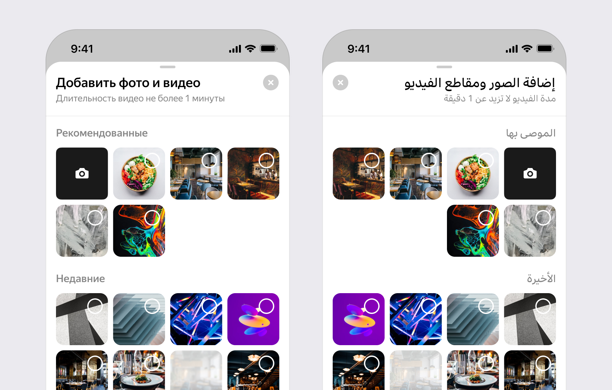

How do you grow an already successful business in a local market when you are already the market leader?
In 2023, I was responsible for the interface side of the Yango Maps launch. This is how we developed the product for a new market.
The product must support the language of the country it is entering. We implemented RTL support, something we had wanted to do for a long time.

We studied how people perceived the product and its features, while refining terminology and translations for the new market.